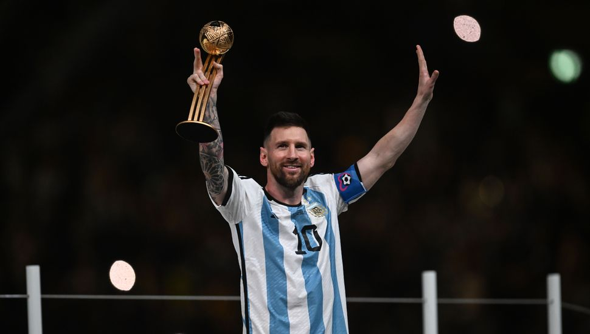
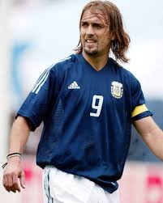
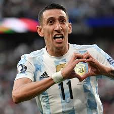
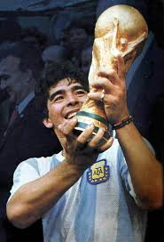
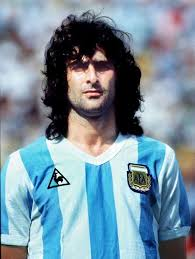

Introducción breve a la Página
Aquí encontrarás una amplia gama de artículos oficiales y productos exclusivos que celebran el espíritu y la pasión del fútbol argentino. Desde camisetas auténticas hasta accesorios de estilo de vida, estamos dedicados a ofrecerte la mejor selección de productos para que puedas mostrar tu apoyo incondicional a la Selección Argentina en cualquier momento y en cualquier lugar. Sumérgete en nuestra colección y descubre cómo puedes llevar el orgullo argentino contigo, ya sea en el estadio, en la calle o en casa. Estamos emocionados de ofrecerte una experiencia única donde podrás encontrar una amplia variedad de artículos cuidadosamente seleccionados que celebran la rica historia y el legado del fútbol argentino. ¡Prepárate para vivir y respirar el fútbol desde nuentra pagina web!
Historia
La historia de la selección argentina es una mezcla de éxitos en los torneos internacionales, momentos icónicos y una rica tradición futbolística que ha contribuido significativamente al legado del fútbol mundial. Es decir, es una historia llena de momentos emocionantes, por eso a continuación tienes un resúmen de algunos datos y momentos más inmemorables
- Fundación y Primeros Pasos: La Asociación del Fútbol Argentino (AFA) fue fundada en 1893, y la selección nacional jugó su primer partido internacional en 1902 contra Uruguay, perdiendo 6-0.
- Primeros Títulos: Argentina ganó su primer título importante al ganar el torneo de fútbol en los Juegos Olímpicos de 1928 y 1936.
- Copa Mundial de la FIFA: La selección argentina ha tenido un gran éxito en la Copa Mundial de la FIFA. Ganaron su primer título en 1978 cuando fueron anfitriones del torneo. Luego, en 1986, liderados por Diego Maradona, ganaron su segundo título en México. Maradona tuvo un papel estelar, anotando el famoso "Gol del Siglo" y el "Gol de la Mano de Dios" en el mismo partido contra Inglaterra en los cuartos de final.
- Era Moderna: Argentina ha sido una presencia constante en las fases finales de la Copa del Mundo y ha producido una serie de jugadores de clase mundial, como Lionel Messi, considerado uno de los mejores futbolistas de todos los tiempos. A pesar de llegar a finales y semifinales, la selección argentina ha tenido altibajos en su rendimiento en la Copa Mundial desde 1986, no habiendo podido ganar el título nuevamente.
- Copa América: Argentina también ha tenido éxito en la Copa América, ganando el torneo en varias ocasiones, incluidas las victorias en 1991, 1993, 2021, entre otras.
- Rivalidades: La selección argentina tiene fuertes rivalidades, especialmente con Brasil y Uruguay, consideradas algunas de las rivalidades más intensas en el fútbol internacional.
- Jugadores Emblemáticos: Además de Maradona y Messi, la selección argentina ha contado con muchos jugadores talentosos a lo largo de los años, como Gabriel Batistuta, Mario Kempes, Javier Zanetti, y muchos más.
Jugador Destacado
Lionel Andres Messi
El mejor jugador de la historia del futbol
4 jugadores Destacables
Gabriel Batistuta
2do mayor goleador de la historia de la Selección
Angel Di Maria
2do mayor asistidor de la historia de la Selección
Diego Armando Maradona
Considerado por algunos el mejor jugador del mundo. Campeón y figura del mundial del 86
Mario Alberto Kempes
Fue el conductor de la selección Argentina que ganó por primera vez la Copa del Mundo en 1978. Siendo el máximo goleador y mejor jugador del campeonato.